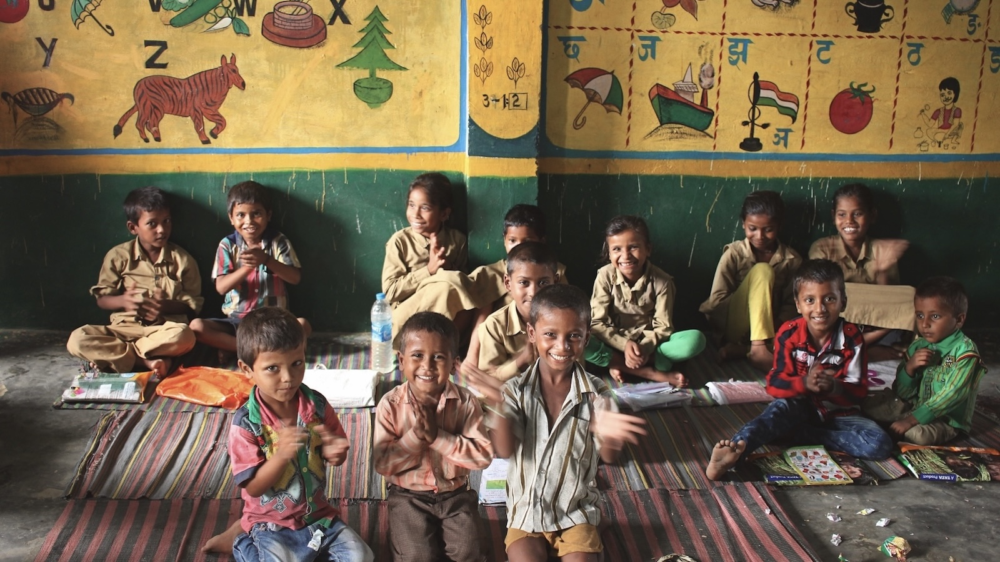
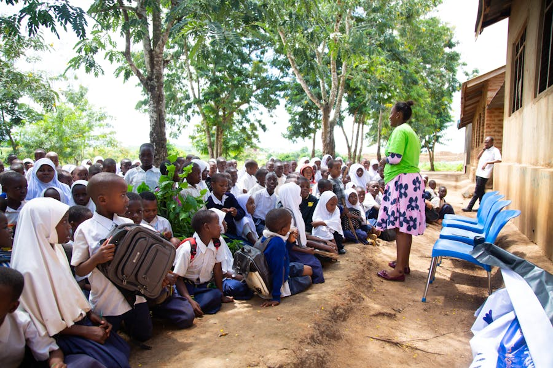
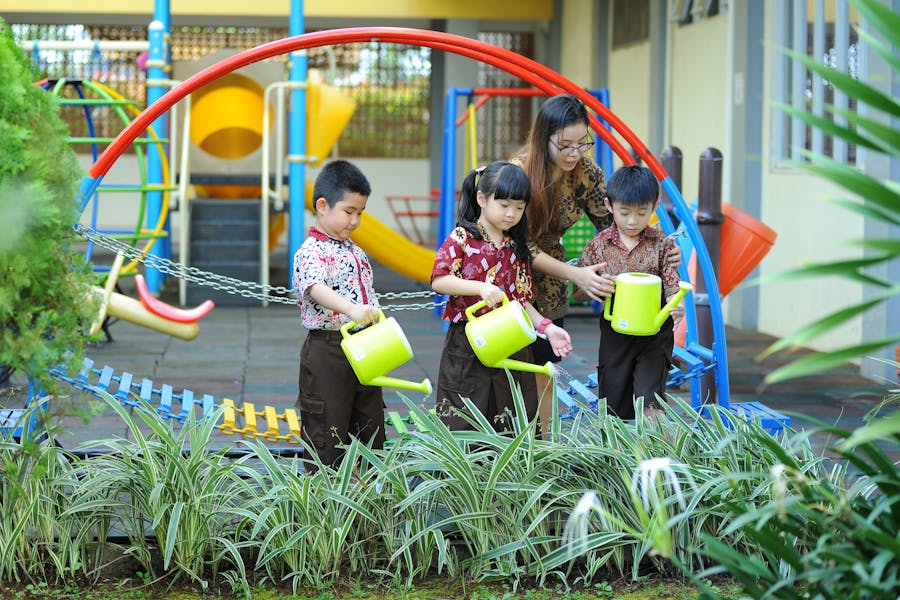

Digital tools can expand access to learning, but only when every learner is able to connect. Around the world, many schools and homes still lack reliable internet, devices, or basic digital skills. According to UNESCO, a large share of primary and secondary schools are not yet connected to the internet, which limits how teachers and students can benefit from online resources. This “digital divide” is not only about technology; it reflects deeper inequalities linked to income, geography and disability. Without targeted investment in infrastructure, affordable devices and digital literacy training, digital learning risks widening, rather than reducing, gaps in education. Ensuring that all students can take part in safe, inclusive online learning is essential to achieving Sustainable Development Goal 4 on quality education for all.

Gender should never decide who gets to learn, yet millions of girls still face barriers to education. Issues such as poverty, child marriage, unpaid care work and gender-based violence make it harder for girls to stay in school, especially at secondary level. UNICEF reports that well over one hundred million girls worldwide are out of school, and many who do attend face unsafe or discriminatory environments. These gaps are not only unfair; they also hold back communities and economies, because educating girls is linked to better health, higher incomes and stronger participation in decision-making. Achieving gender equality in education means removing practical barriers, challenging stereotypes, and ensuring that every learner, regardless of gender, can feel safe, respected and supported in the classroom.
Being in school does not always mean receiving a quality education. Many children still have no access to school at all, while others attend overcrowded classes with too few trained teachers, limited learning materials and unsafe buildings. Globally, hundreds of millions of children and young people remain out of school, and many more are not learning even basic skills. The World Bank describes a crisis of “learning poverty”, where a high share of 10-year-olds in low- and middle-income countries cannot read and understand a simple text. This lack of foundational learning makes it difficult to progress in education and limits opportunities in adult life. Improving access and quality together—through investment in teachers, inclusive curricula and safe, well-resourced schools—is essential for breaking cycles of disadvantage.


Education has a key role in preparing learners to respond to the climate and environmental crisis, yet sustainability is still missing from many classrooms. Recent analyses by UNESCO show that around half of national curriculum frameworks reviewed make no reference to climate change at all, and many teachers do not feel confident to teach it. Without clear space in the curriculum, students may leave school without understanding how climate change, biodiversity loss and resource use affect their lives and communities. Eco-conscious development in education means “greening” schools: integrating environmental topics across subjects, involving students in sustainable projects on campus, and encouraging critical thinking about our impact on the planet. This helps young people become informed citizens who can contribute to a more sustainable future.